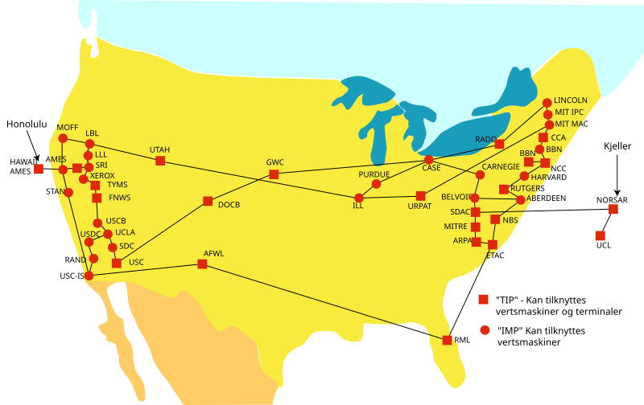
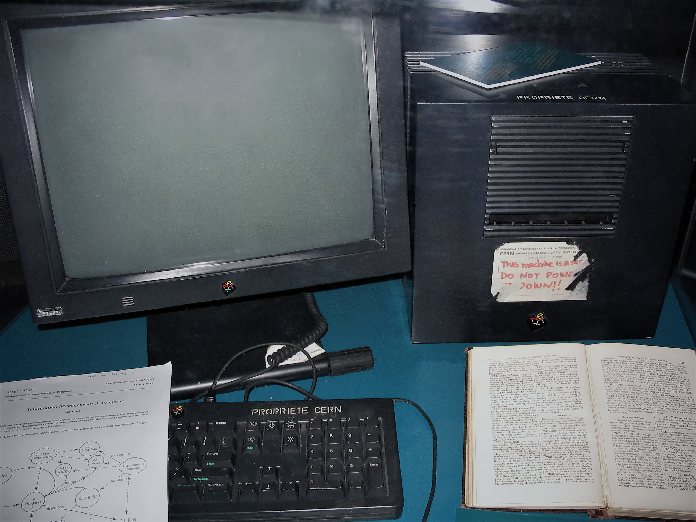
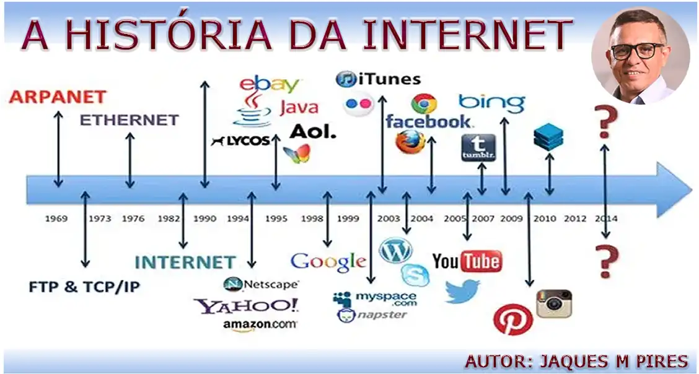

A Internet[1] é um sistema global de redes de computadores interligadas que utilizam um conjunto próprio de protocolos (Internet Protocol Suite ou TCP/IP) com o propósito de servir progressivamente usuários no mundo inteiro. É uma rede de várias outras redes, que consiste de milhões de empresas privadas, públicas, acadêmicas e de governo, com alcance local e global e que está ligada por uma ampla variedade de tecnologias de rede eletrônica, sem fio e ópticas. A Internet traz uma extensa gama de recursos de informação e serviços, tais como os documentos inter-relacionados de hipertextos da World Wide Web (WWW), redes ponto a ponto (peer-to-peer) e infraestrutura de apoio a correio eletrônico (e-mails).
As origens da Internet remontam a uma pesquisa encomendada pelo governo dos Estados Unidos na década de 1960 para construir uma[2] forma de comunicação robusta e sem falhas através de redes de computadores. Embora este trabalho, juntamente com[3] projetos no Reino Unido e na França, tenha levado à criação de redes precursoras importantes, ele não criou a Internet. Não há consenso sobre a data exata em que a Internet moderna surgiu, mas foi em algum momento em meados da década de 1980. O financiamento de uma nova estrutura principal de Informática (dita backbone), para os Estados Unidos pela Fundação Nacional da Ciência nos anos 1980, bem como o financiamento privado para outros similares backbones comerciais, levou à participação mundial no desenvolvimento de novas tecnologias de rede e da fusão de muitas redes distintas. Embora a Internet seja amplamente utilizada pela academia desde os anos 1980, a comercialização da tecnologia na década de 1990 resultou na sua divulgação e incorporação da rede internacional em praticamente todos os aspectos da vida humana moderna. Em junho de 2012, mais de 2,4 bilhões de pessoas — mais de um terço da população mundial — usaram os serviços da Internet, cerca de 100 vezes mais do que em 1995.[1][4] O uso da Internet cresceu rapidamente no Ocidente entre da década de 1990 a início dos anos 2000 e desde a década de 1990 no mundo em desenvolvimento. Em 1994, apenas 3% das salas de aula estadunidenses tinham acesso à Internet, enquanto em 2002 esse índice saltou para 92%.[5]
A maioria das comunicações tradicionais dos meios de comunicação (ou mídia), como telefone, música, cinema e televisão estão a ser remodeladas ou redefinidas pela Internet, dando origem a novos serviços, como o protocolo de Internet de voz (VoIP) e o protocolo de Internet de televisão (IPTV). Jornais, livros e outras publicações impressas estão-se adaptando à tecnologia web ou têm sido reformulados para blogs e feeds. A Internet permitiu e acelerou a criação de novas formas de interações humanas através de mensagens instantâneas, fóruns de discussão e redes sociais. O comércio online tem crescido tanto para grandes lojas de varejo quanto para pequenos artesãos e comerciantes. Business-to-business e serviços financeiros na Internet afetam as cadeias de abastecimento por meio de indústrias inteiras. A essa agregação de funcionalidades por meio dum núcleo comum (Internet, no caso), tem-se usado chamar convergência tecnológica ou, simplesmente, quando não for ambíguo, convergência.
A Internet não tem governança centralizada em qualquer aplicação tecnológica ou políticas de acesso e uso; cada rede constituinte define suas próprias políticas. Apenas as definições de excesso dos dois principais espaços de nomes na Internet — o espaço de endereçamento Protocolo de Internet e Domain Name System — são dirigidos por uma organização mantenedora, a Corporação da Internet para Atribuição de Nomes e Números (ICANN). A sustentação técnica e a padronização dos protocolos de núcleo (IPv4 e IPv6) é uma atividade do Internet Engineering Task Force (IETF), uma organização sem fins lucrativos de participantes internacionais vagamente filiados, sendo que qualquer pessoa pode se associar contribuindo com a perícia técnica.
O termo Internet, como um sistema global específico de redes de IPs interconectados, é um nome próprio. A Internet também é muitas vezes referida como Net. A palavra "internet" foi utilizada historicamente, como substantivo comum em inglês, logo em 1883 como um verbo e adjetivo para se referir a movimentos interligados. No início dos anos 1970, o termo Internet começou a ser usado como nome próprio para o conjunto de redes técnicas, o resultado da interligação de redes de computadores com gateways especiais ou roteadores. Ele também foi usado (em inglês) como um verbo que significa "conectar", especialmente redes.[3][6]
Os termos Internet e World Wide Web são frequentemente usados como sinônimos na linguagem corrente, é comum falar-se de "navegar na Internet", em referências ao navegador web para exibir páginas web. No entanto, a Internet é uma rede mundial de computadores especial conectando milhões de dispositivos de computação, enquanto a World Wide Web é apenas um dos muitos serviços que funcionam dentro da Internet. A Web é uma coleção de documentos interligados (páginas web) e outros recursos da Internet, ligadas por hiperlinks e URLs. Além da web, muitos outros serviços são implementados através da Internet, como e-mail, transferência de arquivos, controle remoto de computador, grupos de notícias e jogos online. Todos esses serviços podem ser implementados em qualquer intranet, acessível para os usuários da rede.[7]
A pesquisa sobre a comutação de pacotes começou na década de 1960 e redes de comutação de pacotes, como Mark I, no NPL no Reino Unido,[8] ARPANET, CYCLADES,[9][10] Merit Network,[11] Tymnet e Telenet, foram desenvolvidas em final dos anos 1960 e início dos anos 1970, usando uma variedade de protocolos. A ARPANET, em particular, levou ao desenvolvimento de protocolos para internetworking, onde várias redes separadas poderiam ser unidas em uma rede de redes. Os dois primeiros nós do que viria a ser a ARPANET foram interconectados entre o Network Measurement Center de Leonard Kleinrock na Escola de Engenharia e Ciências Aplicadas da UCLA e o sistema NLS de Douglas Engelbart no SRI International (SRI), em Menlo Park, Califórnia, em 29 de outubro de 1969.[11] O terceiro nó da ARPANET era o Culler-Fried Interactive Mathematics Center da Universidade da Califórnia em Santa Bárbara e o quarto era o Departamento Gráfico da Universidade de Utah. Em um sinal precoce de crescimento futuro, já havia quinze sites conectados à jovem ARPANET até o final de 1971.[2][12]
Em dezembro de 1974, o RFC 675 - Specification of Internet Transmission Control Program, de Vinton Cerf, Yogen Dalal e Carl Sunshine usou o termo internet como uma abreviação para internetworking e RFCs posteriores repetiram esse termo.[13] O acesso à ARPANET foi ampliado em 1981, quando a Fundação Nacional da Ciência (NSF), desenvolvido a Computer Science Network (CSNET). Em 1982, o Internet Protocol Suite (TCP/IP) foi padronizada e o conceito de uma rede mundial de redes TCP/IP totalmente interligadas chamado de Internet foi introduzido.
O acesso à rede TCP/IP expandiu-se novamente em 1986, quando o National Science Foundation Network (NSFNET) proveu acesso a sites de supercomputadores nos Estados Unidos a partir de organizações de pesquisa e de educação, o primeiro a 56 kbit/s e, mais tarde, 1,5 Mbit/s e 45 Mbit/s.[14]
A Organização Europeia para a Investigação Nuclear (CERN) foi a responsável pela invenção da World Wide Web, ou simplesmente a Web, como hoje a conhecemos. Corria o ano de 1990, e o que, numa primeira fase, permitia apenas aos cientistas trocar dados, acabou por se tornar a complexa e essencial Web. O responsável pela invenção chama-se Tim Berners-Lee, que construiu o seu primeiro computador na Universidade de Oxford, onde se formou em 1976. Quatro anos depois, tornava-se consultor de engenharia de software no CERN e escrevia o seu primeiro programa para armazenamento de informação – chamava-se Enquire e, embora nunca tenha sido publicada, foi a base para o desenvolvimento da Web. Em 1989, propôs um projeto de hipertexto que permitia às pessoas trabalhar em conjunto, combinando o seu conhecimento numa rede de documentos. Foi esse projeto que ficou conhecido como a World Wide Web. A Web funcionou primeiro dentro do CERN, e no Verão de 1991 foi disponibilizada mundialmente.[15][16]
A Internet foi totalmente comercializada nos Estados Unidos em 1995, quando a NSFNET foi desmantelada, removendo as últimas restrições sobre o uso da Internet para transportar o tráfego comercial.[17] A Internet começou uma rápida expansão para a Europa e Austrália em meados da década de 1980[18] e para a Ásia no final dos anos 1980 e início dos anos 1990.[19]
Desde meados da década de 1990 a Internet teve um enorme impacto sobre a cultura e o comércio mundiais, como pelo aumento da comunicação instantânea através de e-mails, mensagens instantâneas, "telefonemas" VoIP, chamadas de vídeo interativas, com a World Wide Web e seus fóruns de discussão, blogs, redes sociais e sites de compras online. Quantidades crescentes de dados são transmitidos em velocidades cada vez mais elevadas em redes de fibra óptica operando a 1 Gbit/s, 10 Gbit/s, ou mais.[21]
A Internet continua a crescer, impulsionando quantidades cada vez maiores de informações on-line e de conhecimento, comércio, entretenimento e redes sociais.[22] Durante a década de 1990, estimou-se que o tráfego na Internet pública cresceu cerca 100% ao ano, enquanto estima-se que o crescimento anual do número de usuários seja de algo entre 20% e 50%.[23] Este crescimento é muitas vezes atribuído à falta de uma administração central, que permita o crescimento orgânico da rede, bem como pela natureza não proprietária e aberta dos protocolos de Internet, o que incentiva o fornecedor de interoperabilidade e impede qualquer empresa de exercer muito controle sobre a rede.[24] Em 31 de março de 2011, o número total estimado de usuários da Internet foi de cerca de 2 bilhões de pessoas (ou cerca de 30% da população mundial).[25] Estima-se que em 1993 a Internet realizou apenas 1% do fluxo de informações através de duas vias de telecomunicações; em 2000 este valor tinha aumentado para 51% e, até 2007, mais do que 97% de todas as informações telecomunicadas foi realizada através da rede mundial.[26]

No Brasil existe desde 1995 o Comitê Gestor da Internet, órgão responsável por estabelecer as diretrizes estratégicas para a navegação na Internet do Brasil.[27]Em 2005 a tarefa de liberar os registros da Internet no Brasil deixou de ser da FAPESP, que até então foi responsável pela liberação dos domínios .br( ponto br),e passou a ser responsabilidade do NIC.br, entidade criada pelo Comitê Gestor da Internet.[28][29] Em 2012 foi atingida a marca de três milhões de domínios .br (ponto br) registrados.[30][31] Em setembro de 2022 os domínios .br alcançaram a marca de 5 milhões.[32][30][31] No final de 1997, o Comitê Gestor passou a liberar os novos domínios de segundo nível.[32][33] Antes desses e além o domínio de primeiro nível .br, o Brasil tinha apenas cinco domínios de segundo nível.[32][34] Em 23 de abril de 2014 foi sancionada a Lei Federal 12 965, do Marco Civil da Internet, que estabeleceu os princípios, garantias, direitos e deveres para a utilização da Internet no Brasil.[35][36]
A Internet é uma rede global que compreende muitas redes autônomas interconectadas voluntariamente e que opera sem um órgão de governo central. A sustentação técnica e a padronização dos protocolos principais (IPv4 e IPv6) é uma atividade da Internet Engineering Task Force (IETF), uma organização sem fins lucrativos de participantes internacionais livremente afiliados, à qual qualquer pessoa pode se associar, contribuindo com conhecimentos técnicos. Para manter a interoperabilidade, os principais espaços de nomes da Internet são administrados pela Corporação da Internet para Atribuição de Nomes e Números (ICANN, sigla em inglês), que é governada por um conselho de diretores internacional (formado por representantes de comunidades técnicas, empresariais, acadêmicas e outras comunidades não comerciais da Internet) e coordena a atribuição de identificadores exclusivos para uso na Internet, incluindo nomes de domínio, endereços IP, números de porta de aplicativos nos protocolos de transporte, além de vários outros parâmetros. Espaços de nomes globalmente unificados são essenciais para manter o alcance global da Internet. Este papel da ICANN distingue-a como talvez o único órgão central de coordenação para a Internet global.[37]
Registros Regionais da Internet (RIRs) foram estabelecidos para cinco regiões do mundo. O Centro Africano de Informação de Rede (AfriNIC) para a África,[38] o Registro Americano de Números de Internet (ARIN) para a América do Norte,[39] o Centro de Informação de Rede Ásia-Pacífico (APNIC) para a região da Ásia e do Pacífico,[40] o Registro de Endereços de Internet da América Latina e Caribe (LACNIC) para a região da América Latina e Caribe,[41] e o Réseaux IP Européens – Centro de Coordenação de Rede (RIPE NCC) para a Europa,[42] Oriente Médio e Ásia Central foram delegados para atribuir blocos de endereços IP e outros parâmetros da Internet a registros locais, como provedores de serviços de Internet, a partir de um conjunto designado de endereços reservados para cada região.[43] A Internet Society (ISOC) é outra organização fundada em 1992 com a missão de “garantir o desenvolvimento aberto, a evolução e o uso da Internet para o benefício de todas as pessoas em todo o mundo”.[44]
A infraestrutura de comunicações da Internet consiste em componentes de hardware e um sistema de camadas de software que controlam vários aspectos da arquitetura. Como acontece com qualquer rede de computadores, a Internet consiste fisicamente em roteadores, mídia (como cabeamento e links de rádio), repetidores, modems, etc.No entanto, como exemplo de interligação de redes, muitos dos nós da rede não são necessariamente equipamentos de Internet em si, os pacotes de Internet são transportados por outros protocolos de rede completos, com a Internet atuando como um padrão de rede homogêneo, executado em hardware heterogêneo, com os pacotes guiados até seus destinos por roteadores IP. Muitos cientistas de computação veem a Internet como o "maior exemplo de sistema de grande escala altamente engenharizado, ainda muito complexo".[45]
A Internet é extremamente heterogênea, por exemplo, as taxas de transferências de dados e as características físicas das conexões variam grandemente. A Internet exibe "fenômenos emergentes" que dependem de sua organização de grande escala. Por exemplo, as taxas de transferências de dados exibem autossimilaridade temporal. Adicionando ainda mais à complexidade da Internet, está a habilidade de mais de um computador de usar a Internet através de um elo de conexão, assim criando a possibilidade de uma sub-rede profunda e hierárquica que pode teoricamente ser estendida infinitamente, desconsiderando as limitações programáticas do protocolo IPv4. Os princípios desta arquitetura de dados se originam na década de 1960, que pode não ser a melhor solução de adaptação para os tempos modernos. Assim, a possibilidade de desenvolver estruturas alternativas está atualmente em planejamento.[46]
De acordo com um artigo de junho de 2007, na revista Discover, o peso combinado de todos os elétrons que se movem dentro da Internet num dia é de 2−6 gramas.[47] Outras estimativas dizem que o peso total dos elétrons que se movem na Internet diariamente chega a 2 gramas.[48] Existem muitas análises da Internet e de sua estrutura. Por exemplo, foi determinado que tanto a estrutura de rotas IP da Internet quanto as ligações de hipertexto da World Wide Web são exemplos de redes de escala livre. Semelhantemente aos provedores comerciais de Internet, que se conectam através de pontos neutros, as redes de pesquisa tendem a se interconectar com subredes maiores, como GEANT; GLORIAD; Internet2 (conhecido anteriormente como Rede Abilene) e JANET (A Rede Nacional de Pesquisa e Educação do Reino Unido). Essas, então, são construídas em torno de redes relativamente menores. Diagramas de redes de computador representam frequentemente a Internet usando um símbolo de nuvem, pelo qual as comunicações de rede passam.[49]